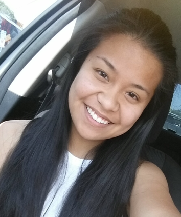

Liz Navalta
UX Designer
Los Angeles, CA | Email:enavalta11@gmail.com | Portfolio: www.elizabethnavalta.com
SUMMARY
As a UX Designer, I blend business and product objectives with empathetic design, fostering meaningful connections
between humans and technology. With 5+ years of diverse experience domains, I've collaborated with cross-functional
teams to drive user-centric solutions. I am committed to continuous learning of UX trends and best practices.
PROFESSIONAL EXPERIENCE
Freelance, UX DESIGNER
Los Angeles, CA | Sept 2022 to Present
- Conductd competitive analysis for an accounting advisory firm, proposed design enhancements for their
culture and benefits webpage, and strategized for upcoming project iterations.
- Revamped landing page and redefined brand identity, enhacing the end-toend customer experience for
a small e-commerce business
CNM LLP, Talent Operations Coordinator
Woodland Hills, CA | Sept 2021 - Mar 2023 (layoff)
- Managed intereview schedules for 7 team memebers across four geolocations (Los Angeles, Orange County, San Diego,
New York), reducing the interview timeline by 30%.
- Developed comprehensive recruiting training materials, streamlining onboarding for new recruiters and directors.
- Produced weekly hiring reports, enabling operations to expedite the onboarding process by 2-4 weeks ahead of start dates.
CNM LLP, Operations Coordinator
Woodland Hills, CA | Jun 2019 - Sept 2021
- Assisted Resource Management for 6 months in deployment a new scheduling system for consultants, leading to an
enhanced contractor onboarding experience and creating two Resource Management associate roles.
- Stepped in for 8 months in Accounting during staff shortages, handling bank reconciliations, recording checks and EFT payments,
and aiding in the implementation of a new ERP system.
- Organized training for 4 employees on evolving procsses during the transition to Talent Operations.
ProActive Work Health Services, Accounting Assistant
Sherman Oaks, CA | Mar 2018 - May 2019
- Liased with vendors to address dicrepancies and resolve issues.
- Prepared financial reporting packages for the Director's presentations to prospectives investors.
ProActive Work Health Services, Referral Coorinator
Sherman Oaks, CA | Oct 2017 - Mar 2018
- Liased with insurance adjustors to gather claim specifics, ensuring optimal medical treatment and locations convenience for clients.
- Developed a training program outlinging expectations, processes, and client requiremtns, priming a new team of referral coordinators
for the addition of three clinics.
DESIGN SKILLS:
UX Research, Journey Mapping, Wireframing, Expereince Design, Usability Testing, Prototyping, Learning HTML:5 and CSS
TOOLS:
- Figma
- Optimal Workshop
- Notion
- Whimsical
- Mockup (APP)
- Webflow
- Wordpress
- Miro
EDUCATION
California State University, Channel Islands B.S in Business Administration
DesignLab
UX Foundations and UX Academy
- 550+ hours of coursework in DesignLab's UX Foundations and Academy bootcamp
- Completed capstone projects that focus on responsive designs, a new feature within an existing product, and end-to-end mobiles app design.
LINKS
github
my portfolio
Who am I offline?
Hobbies
- Playing Video Games
- Reading
- Hanging out with my other foodie fiends
- Coffee! and Matcha!